JavaScript & TypeScript
Closure, hoisting, this, event loop, module, ES6, promise và bất đồng bộ — nhóm câu hỏi nền tảng nhất khi phỏng vấn frontend; kèm phần TypeScript: interface vs type, any, unknown, keyof.
Throttle
là 1 kỹ thuật giúp bạn kiểm soát đc tầng suất gọi hàm , đảm bảo hàm chỉ đc gọi 1 lần sau 1 khoảng time chờ nhất định . Limits the rate at which a function can be called.
Debounce
là 1 kỹ thuật đảm bảo rằng 1 hàm sẽ ko đc thực thi cho đến khi 1 khoảng thời gian nhất định trôi qua kể từ lần gọi hàm cuối cùng, if hàm đc gọi lại trong khoảng time đó thì bộ đếm time sẽ đc đặt lại . Delays the execution of a function until a certain period of time has passed since the last event trigger.
Event delegation
là kỹ thuật gắn sự kiện vào một phần tử cha và sau đó sử dụng bubbling để xác định mục tiêu thực sự của sự kiện. Thay vì gắn sự kiện trực tiếp vào từng phần tử con, chúng ta chỉ cần gắn vào phần tử cha duy nhất. Điều này giúp giảm thiểu số lượng sự kiện và cải thiện hiệu suất.
Khi em dùng javascript với các module bundler như webpack, rollup, vite,... thì sẽ đc tích hợp sẵn tree shaking giúp tối ưu các bản build nha
async và defer trong <script>
là các đoạn mã cung cấp chức năng mà trình duyệt ko hỗ trợ
closure
- là một hàm có thể truy cập và sử dụng các biến từ phạm vi bên ngoài của hàm cha, ngay cả khi hàm cha đó đã được thực thi xong. Dấu hiệu nhận biết : 1 func return func
- Tại sao closure lại xảy ra?
- Môi trường thực thi (execution context): Mỗi khi một hàm được gọi, một môi trường thực thi mới được tạo ra. Môi trường này chứa các biến và tham số của hàm đó.
- Scope chain: Các môi trường thực thi được liên kết với nhau thành một chuỗi, gọi là scope chain. Khi một hàm tìm kiếm một biến, nó sẽ lần lượt tìm trong scope của chính nó, sau đó là scope của hàm cha, và cứ thế cho đến khi tìm thấy hoặc đến scope toàn cục.
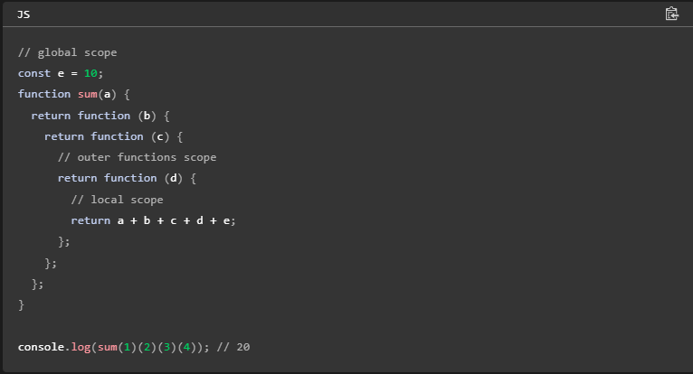
Closure: Khi một hàm bên trong (inner function) được trả về từ một hàm bên ngoài (outer function), hàm bên trong này sẽ giữ lại một tham chiếu đến môi trường thực thi của hàm bên ngoài. Điều này tạo ra một closure.
Hoisting
là một khái niệm quan trọng trong JavaScript, mô tả cách trình biên dịch JavaScript xử lý các khai báo biến và hàm trước khi thực thi mã. Nói một cách đơn giản, hoisting là việc "nâng" các khai báo lên đầu phạm vi hiện tại.
IIFE
là function expression được gọi ngay lập tức. Ví dụ:
(function() {// call api})()Các cách gọi hàm trong JS
// logic show
}
show();
new show;
show``in và hasOwnProperty()
in : được sử dụng để kiểm tra xem một thuộc tính có tồn tại trong một đối tượng hay không. Nó trả về một giá trị boolean (true hoặc false)
kiểm tra cả các thuộc tính được định nghĩa trực tiếp trong đối tượng và các thuộc tính được kế thừa từ prototype.
được sử dụng với các kiểu dữ liệu khác như array, string
vd:
const person = { firstName: "John", lastName: "Doe", age: 30 }; console.log("firstName" in person); // Output: trueconst myArray = ['apple', 'banana', 'orange']; console.log(0 in myArray); // Output: true (vì có phần tử tại index 0)
hasOwnProperty : chỉ kiểm tra các thuộc tính được định nghĩa trực tiếp trong đối tượng, không bao gồm các thuộc tính kế thừa.
Tham số và đối số
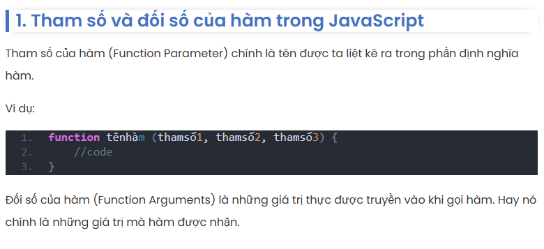
var, let và const
https://www.freecodecamp.org/news/var-let-and-const-whats-the-difference/
hoặc
https://anonystick.com/blog-developer/troi-sinh-ra-var-sao-con-sinh-ra-let-va-const-javascript-2019122884060190.jsx
context
context js la this keyword đề cập (tham chiếu) đến đối tượng mà nó thuộc về- Với method: this là obj chứa method này- Với function: + this là global object (là an object which represents the global scope.)
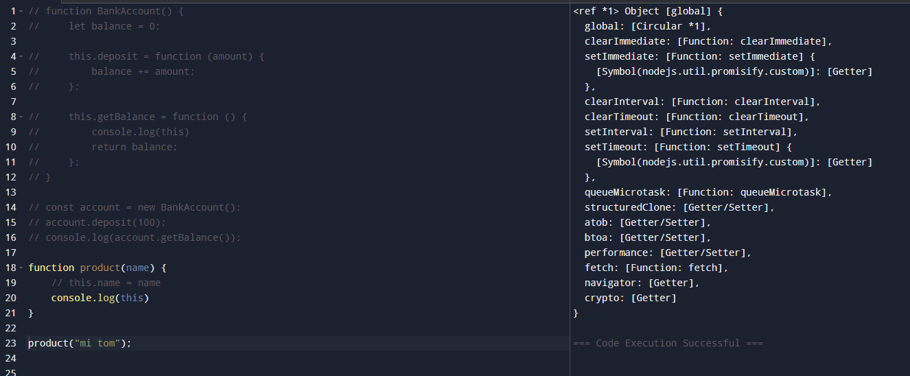
nếu function là 1 func constructor thì this là obj với func constructor đó, và 1 func là func constructor khi ta dùng : var a = new func(truyền param nếu có);
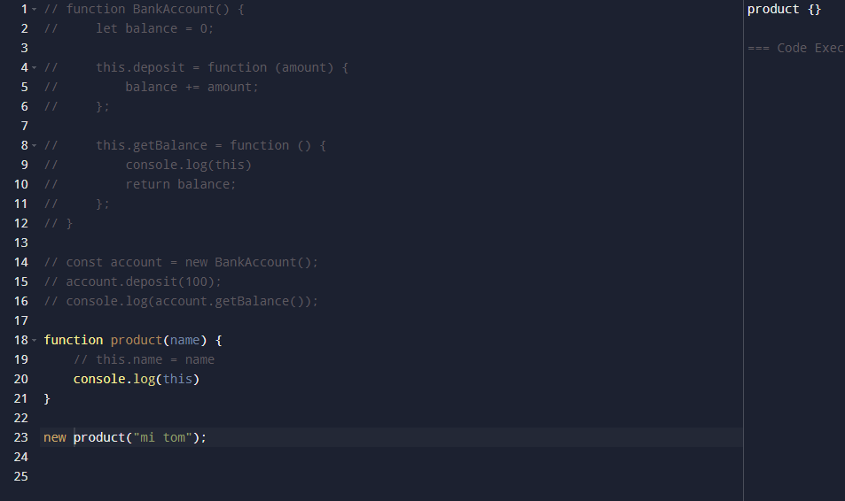
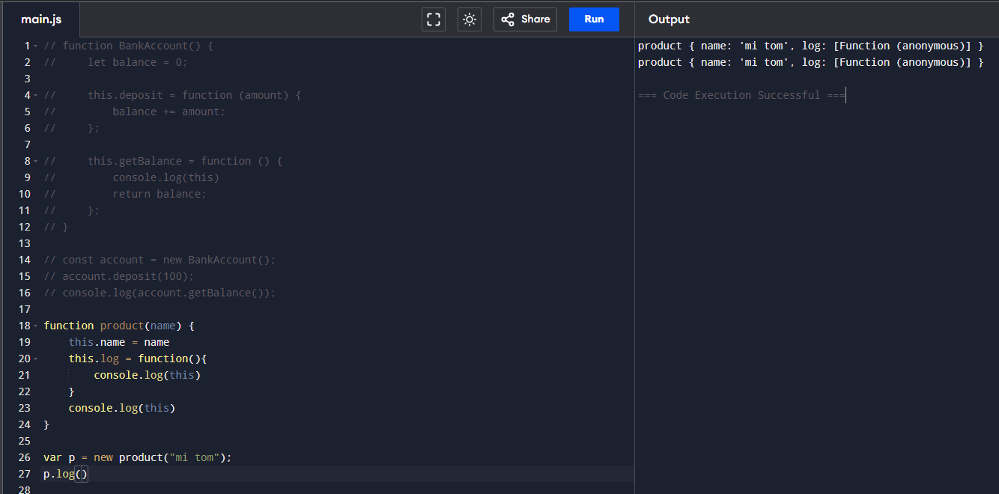
arrow func ko thể dùng this bởi vì nó ko là 1 func constructor khi dùng từ khóa new
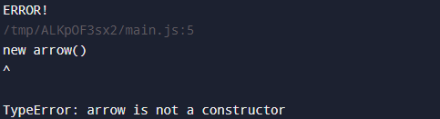
Rest parameter, Spread operator, Destructuring
Call stack , Micro(Task) Queue
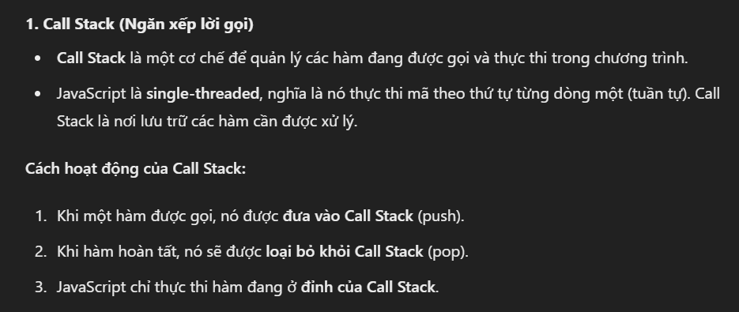
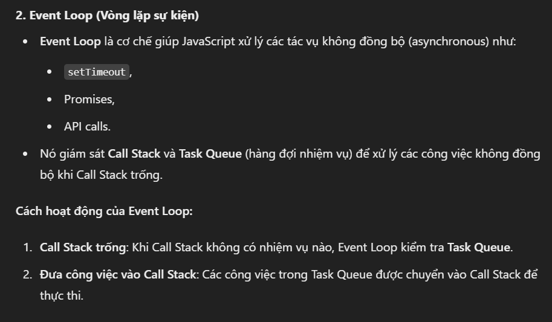
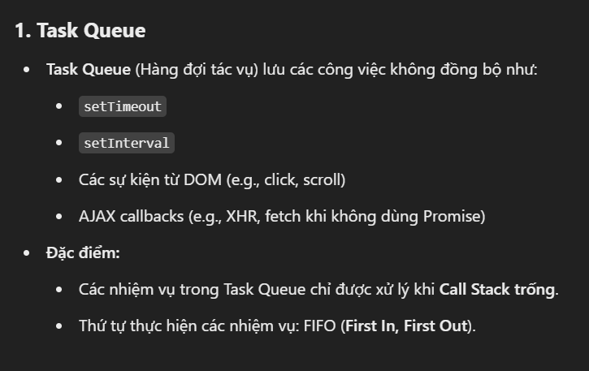
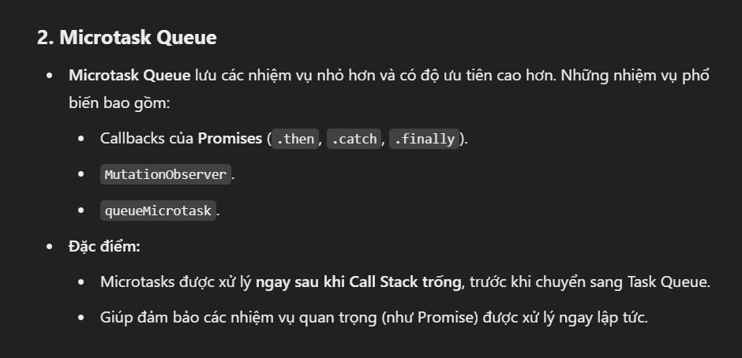
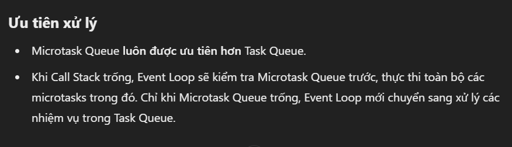
Modules
- là cách tổ chức mã nguồn bằng cách chia nhỏ thành các file riêng biệt (mỗi file là 1 module), với mỗi module có một chức năng riêng biệt.
- Trong một module, bạn có thể sử dụng từ khoá export để export bất kỳ kiểu dữ liệu nào như: biến số với var, let hay const, class, function,... Sau đó, bạn sử dụng từ khoá import để sử dụng chúng ở một file khác.
- Sử dụng ES Modules có một số lợi ích như:
- Giúp module hoá chương trình. Qua đó, việc xây dựng, kiểm thử và bảo trì code sẽ tốt hơn.
- Hỗ trợ dynamic import() giúp download modules khi cần thiết. Nhờ vậy, thời gian load trang sẽ giảm xuống.
có default: chỉ xuất hiện 1 lần trong 1 file
export default getProduct; => import getProduct from ‘../product.js’
ko có default: xuất hiện nhiều lần trong 1 file, import 1 destructuring
export const TYPE_SUCCESS = ‘success’
export const TYPE_ERROR = ‘error’=> import { TYPE_SUCCESS, TYPE_ERROR } from ‘../constants.js’
hoặc import * as constants from ‘../constants.js’
Currying
currying
là một kỹ thuật mà cho phép ta thay vì sử dụng một function có nhiều tham số truyền vào dài dòng thì ta có thể chuyển đổi thành những function liên tiếp có một tham số truyền vào thôi.
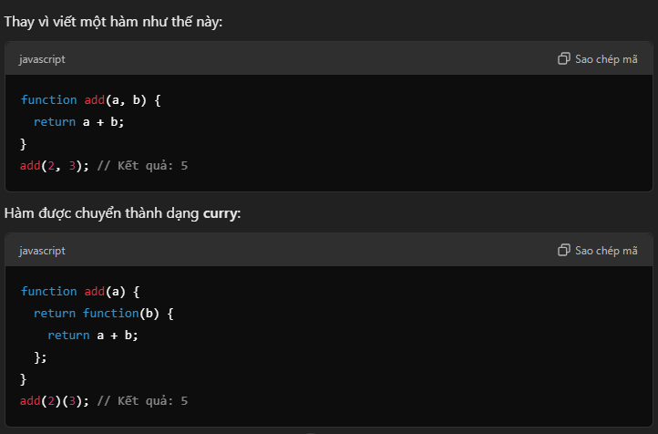
distinguish interface and type
- interface thường dùng để mô tả hình dạng đối tượng, định nghĩa cấu trúc của object
- type linh hoạt hơn, không chỉ dùng cho object mà còn có thể alias cho kiểu nguyên thủy, union ( | ), intersection ( & ), tuple [T1, T2, ...], function types, v.v.
- Interface cho phép sử dụng từ khóa
extendsđể mở rộng từ interface hoặc type alias khác, và có thể áp dụng cho lập trình hướng đối tượng - Type alias để mở rộng từ các type khác bằng cách dùng toán tử giao hợp như union, …
-Interface hỗ trợ declaration merging: nếu khai báo interface cùng tên nhiều lần, TypeScript sẽ tự động gộp thành một interface chung
Type alias không hỗ trợ việc này — khai báo trùng tên sẽ gây lỗi
any type
- cho phép bạn gán bất kỳ giá trị nào và thực hiện bất cứ thao tác nào mà TypeScript cũng không cảnh báo. Nói cách khác, bạn chuyển sang JavaScript thuần túy
- Khi nào dùng: chỉ nên sử dụng khi đang chuyển từ JS sang TS, hoặc làm việc với thư viện không có kiểu rõ ràng. Càng hạn chế càng tốt.
unknown type
- là kiểu "an toàn" hơn any. Bạn có thể gán bất cứ giá trị nào cho unknown, nhưng không được phép thao tác gì lên chúng nếu không thực hiện narrowing (kiểm tra kiểu cụ thể) trước đó.
- Khi nào dùng: phù hợp để xử lý dữ liệu đầu vào không rõ kiểu (như JSON từ API hay input người dùng)
keyof
is used to creates a union of the keys of an object type.
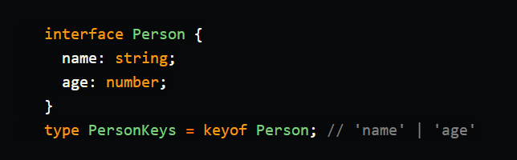
ES6
ES6 (viết tắt của ECMAScript 6, còn gọi là ECMAScript 2015) là một bản cập nhật lớn của ngôn ngữ JavaScript, được công bố vào năm 2015. ES6 mang đến nhiều tính năng mới giúp viết mã JavaScript rõ ràng, ngắn gọn và mạnh mẽ hơn.
Arrow function
là cách viết hàm ngắn gọn hơn được giới thiệu trong ES6. Ngoài cú pháp ngắn, arrow function ko thể dùng this
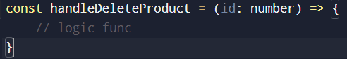
Template literals
là cách viết chuỗi mới trong JavaScript được giới thiệu từ ES6
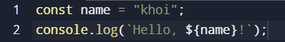
Modules
- là cách tổ chức mã nguồn bằng cách chia nhỏ thành các file riêng biệt (mỗi file là 1 module), với mỗi module có một chức năng riêng biệt.
- Trong một module, bạn có thể sử dụng từ khoá export để export bất kỳ kiểu dữ liệu nào như: biến số với var, let hay const, class, function,... Sau đó, bạn sử dụng từ khoá import để sử dụng chúng ở một file khác.
- Sử dụng ES Modules có một số lợi ích như:
- Giúp module hoá chương trình. Qua đó, việc xây dựng, kiểm thử và bảo trì code sẽ tốt hơn.
- Hỗ trợ dynamic import() giúp download modules khi cần thiết. Nhờ vậy, thời gian load trang sẽ giảm xuống.
có default: chỉ xuất hiện 1 lần trong 1 file
export default getProduct; => import getProduct from ‘../product.js’
ko có default: xuất hiện nhiều lần trong 1 file, import 1 destructuring
export const TYPE_SUCCESS = ‘success’
export const TYPE_ERROR = ‘error’=> import { TYPE_SUCCESS, TYPE_ERROR } from ‘../constants.js’
hoặc import * as constants from ‘../constants.js’
Destructuring
- Gồm có destructuring object và destructuring array
- Destructuring Object cho phép bạn tạo ra một hay nhiều new variables sử dụng những property của một Object.
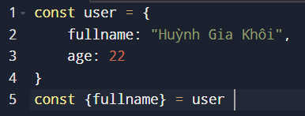
Array destructuring cho phép bạn tạo ra một new variables bằng cách sử dụng giá trị mỗi index của Array.
Bất đồng bộ
là cách thực thi các tác vụ mà không cần chờ tác vụ trước đó hoàn thành, cho phép các lệnh chạy song song và cải thiện hiệu suất
Async/ Await
- là cú pháp của JavaScript ES2017 (ES8) giúp bạn viết code bất đồng bộ (asynchronous) một cách dễ đọc như code đồng bộ (synchronous).
- được hình thành để giải quyết Promise chain (.then().then() )
- Async: là từ khóa được đặt trước một hàm khiến hàm trả về một promise
- Await: là từ khóa được dùng trong 1 async function
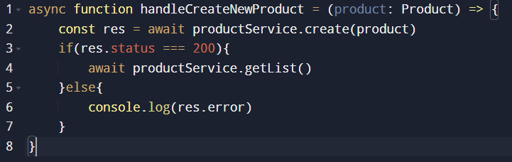
Callback
- là một hàm được truyền như đối số cho một hàm khác
- vd:
listProducts.map(p => p.name)=> arrow function p => p.name là 1 callback function của hàm map
Promise
- là một đối tượng đại diện cho kết quả của một tác vụ bất đồng bộ
- giải quyết vấn đề callback hell (gọi callback function lồng nhiều tầng)
- gồm 3 trạng thái chính :
- pending: khi chưa gọi resolve hoặc reject
- fulfilled: khi đã gọi resolve
- reject: khi đã gọi reject
- Constructor Promise nhận 1 param là 1 callback function (function executor) gồm 2 params là callback function resolve và reject
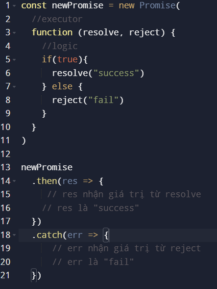
try catch ko thể bắt error ở catch nếu try chứa Promise , bởi vì try catch chỉ bắt lỗi với các câu lệnh (dòng code) đồng bộ
Promise chain
- là kỹ thuật nối tiếp nhiều thao tác bất đồng bộ bằng cách dùng .then() liên tiếp.
- kết quả return của callback func ở then trước sẽ là đối số của callback func của then kế tiếp. Tuy nhiên nếu callback func của then trước không return thì callback func của then kế tiếp nhận undefined
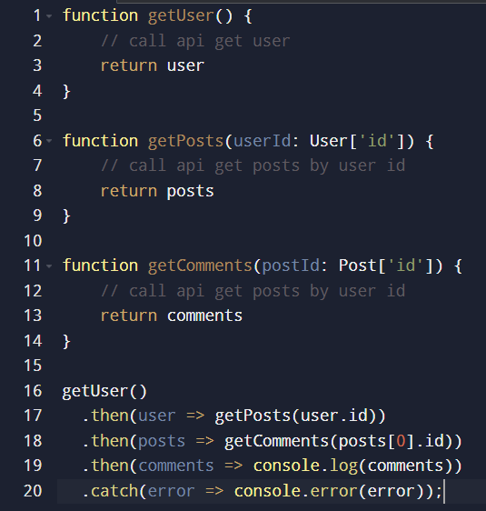
Promise.all()
- một phương thức giúp bạn chạy nhiều Promise song song, và chờ tất cả cùng hoàn thành
- Trong quá trình thực thi các Promise song song , nếu có 1 Promise bị lỗi thì Promise reject và các Promise còn lại vẫn tiếp tục chạy ngầm, chỉ là kết quả của chúng không được dùng nữa
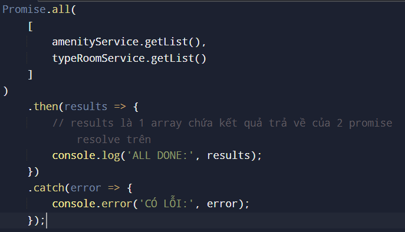
Promise.allSettled()
là một method được dùng để chạy song song nhiều Promise, và chờ tất cả chúng "kết thúc", bất kể là thành công (fulfilled) hay thất bại (rejected).
Array.prototype
- là đối tượng nguyên mẫu (prototype) của tất cả các mảng. Nó chứa các phương thức có sẵn mà mọi mảng đều kế thừa, ví du: map(), filter()
- bên cạnh đó , chúng ta có thể tự định nghĩa 1 method mà Array.prototype chưa hỗ trợ
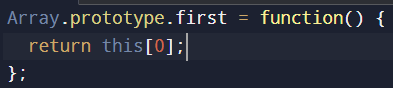
String.prototype
- là đối tượng nguyên mẫu (prototype) của tất cả các chuỗi trong JavaScript. Nó chứa các phương thức có sẵn mà mọi chuỗi kế thừa, ví dụ: length(), charAt(), …
- bên cạnh đó , chúng ta có thể tự định nghĩa 1 method mà Array.prototype chưa hỗ trợ
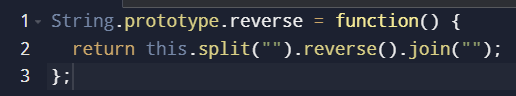
preventDefault
Ngăn hành vi mặc định của element (thẻ a, thẻ form, …)
stopProbagation
Ngăn hiện tượng BUBBLING event
Fetch
là 1 API tích hợp sẵn trong trình duyệt để gửi HTTP request (GET, POST, PUT, DELETE,...) một cách đơn giản và hiện đại, thay thế cho XMLHttpRequest.
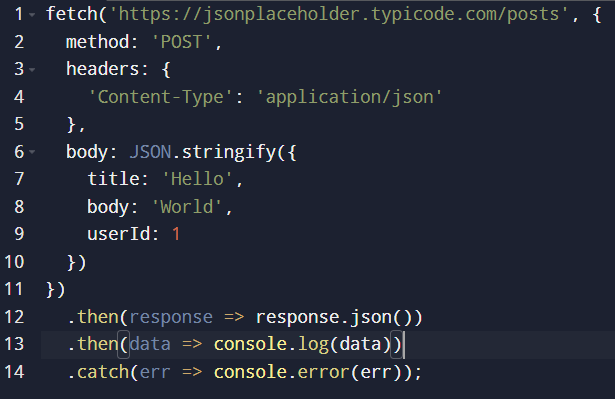
Axios
- là một thư viện HTTP client dùng để gửi các request như
GET,POST,PUT,DELETE,... từ trình duyệt hoặc Node.js. - một thay thế phổ biến cho fetch, với cú pháp ngắn gọn, dễ dùng hơn, và có nhiều tính năng tiện lợi như: tự động biến đổi JSON, hỗ trợ interceptors, timeout, upload progress
- Cách triển khai:
- dùng creat() tạo ra một instance của Axios với cấu hình mặc định riêng (baseURL, headers, timeout,...)
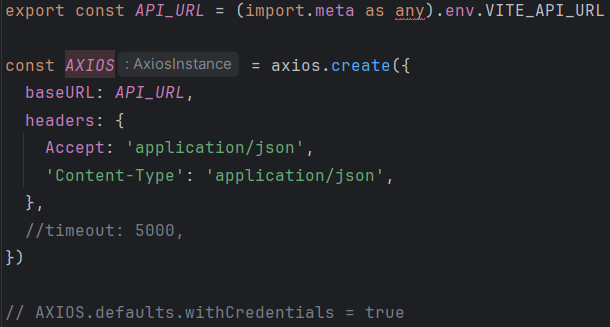
Dùng axios instance vừa mới define với các method GET, POST , …
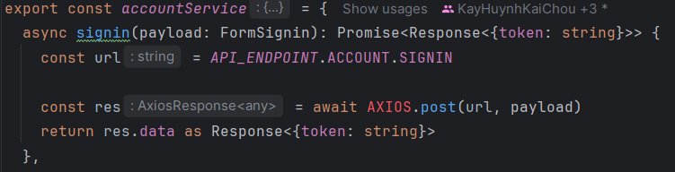
Interceptor trong Axios
là một cơ chế cho phép can thiệp vào request trước khi đc gửi tới server hoặc response trước khi được phản hồi về client
- Vd:
- Thêm Bearer Token vào tất cả request
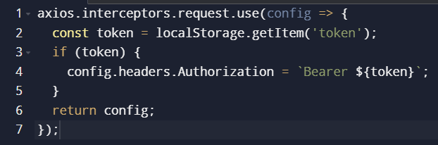
Hết hạn token
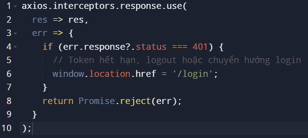